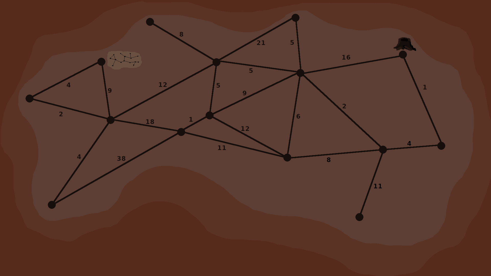

Karl beginnt in dem Raum herumzustöbern und krabbelt durch etwas Laub, welches in den Ecken liegt. Dabei schreckt er wohl ein paar andere Leuchtkäfer auf, die sofort zu leuchten beginnen und den Raum erhellen. Nur sind diese kleiner und wendiger und fliegen schon bald zu dem Loch raus, in das Karl rein gefallen ist. Eines kann Karl aber noch entdecken: Eine Zeichnung an der Wand von dem Tunnelsystem. Da er jetzt wieder im Dunkeln sitzt hat er genug Zeit, um sich den kürzesten Weg durch das stark vernetzte System zum Ausgang zu überlegen. Die Karte scheint idealisiert zu sein, denn die Länge der Tunnel ist sehr unterschiedlich.
Wie lange ist der kürzeste Weg zum Ausgang?